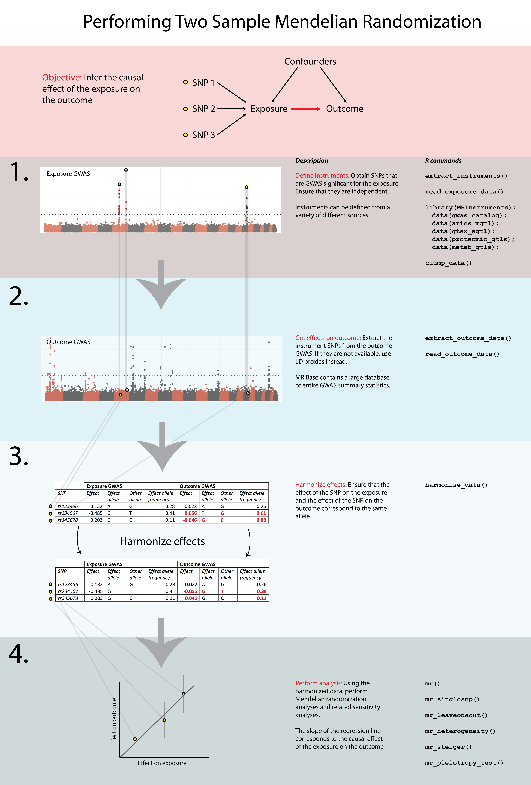

Introduction
Gibran Hemani
introduction.RmdBackground
Two sample Mendelian randomisation (2SMR) is a method to estimate the causal effect of an exposure on an outcome using only summary statistics from genome wide association studies (GWAS). Though conceptually straightforward, there are a number of steps that are required to perform the analysis properly, and they can be cumbersome. The TwoSampleMR package aims to make this easy by combining three important components
- data management and harmonisation
- the statistical routines to estimate the causal effects
- connection to a large repository of the actual GWAS summary statistics needed to perform the analyses.
The general principles (G. Davey Smith and Ebrahim 2003; George Davey Smith and Hemani 2014), and statistical methods (Pierce and Burgess 2013; Bowden, Davey Smith, and Burgess 2015) can be found elsewhere, here we will just outline how to use the R package.
This package uses the ieugwasr package to connect to the database of thousands of complete GWAS summary data.
Installation
To install directly from the GitHub repository do the following:
If you don’t have the remotes package install it from
CRAN using install.packages("remotes").
Overview
The workflow for performing MR is as follows:
- Select instruments for the exposure (perform LD clumping if necessary)
- Extract the instruments from the IEU GWAS database for the outcomes of interest
- Harmonise the effect sizes for the instruments on the exposures and the outcomes to be each for the same reference allele
- Perform MR analysis, sensitivity analyses, create plots, compile reports
A diagrammatic overview is shown here:

A basic analysis, e.g. the causal effect of body mass index on coronary heart disease, looks like this:
library(TwoSampleMR)
# List available GWASs
ao <- available_outcomes()
# Get instruments
exposure_dat <- extract_instruments("ieu-a-2")
# Get effects of instruments on outcome
outcome_dat <- extract_outcome_data(snps=exposure_dat$SNP, outcomes = "ieu-a-7")
# Harmonise the exposure and outcome data
dat <- harmonise_data(exposure_dat, outcome_dat)
# Perform MR
res <- mr(dat)Each step is documented on other pages in the documentation.
Authentication
The authentication method has changed recently due to the GoogleAuthR method changing. The main differences are that:
- By default you will not be asked to authenticate and will only have access to public data
- If you do need to authenticate in order to access private datasets
there is no longer a single file called
mrbase.oauth, rather, there is a directory calledieugwasr_oauth.
Detailed information is given here: https://mrcieu.github.io/ieugwasr/articles/guide.html#authentication